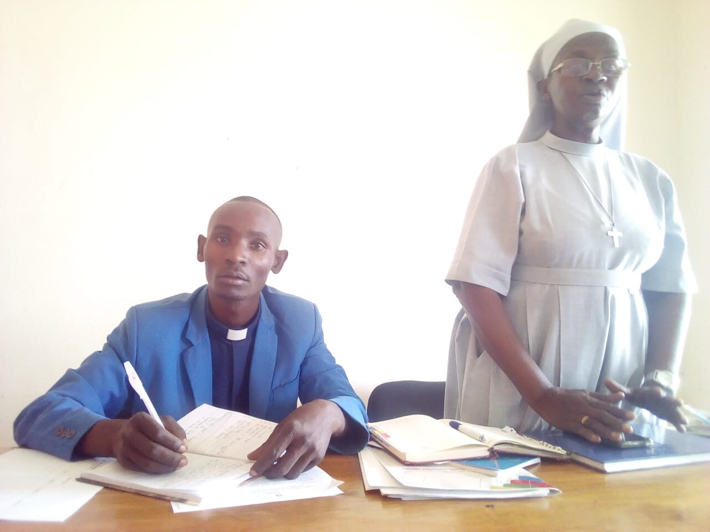

Home / Sustainability Test
Accountability
The Five-Question Financial Exit Test
Our guarantee against aid dependency: grant capital is never used to create permanent financial liabilities or passive dependency loops.

Before any activity is approved
Five questions every activity must pass
Before any activity is activated across our 146 member FBOs and 10 district hubs, it must pass the Secretariat's Program Sustainability & Financial Exit Test.
Local Ownership
Which specific district interfaith hub, member FBO, youth chapter, workers' council or decentralized health committee owns the execution of this initiative?
Post-Grant Continuation
How does this investment strengthen our local revenue engines (Nsinde Eco-Beach hospitality earnings, Interfaith Media Network ad slots and private clinical premiums) to secure 100% financial self-reliance by Year 5?
Systemic Integration
How cleanly does this work align with national labor laws, Ministry of Health HNAP/HDAP guidelines, costed district family planning plans, national wildlife/water mandates and local government budget lines?
Evidence of Value
Which verifiable tracking metric (immunization logs, FP new-user registers, dropout reduction records, signed CBAs, verified trees grown or broadcast analytics) measures the exact return on investment?
Community Mobilization
What tangible local resources (donated land, volunteer planting teams, local building materials or community watchdogs) has the community contributed to guarantee genuine ownership?
Five-year financial exit trajectory to 100% local self-reliance
- Local social enterprise revenue (health wing, Nsinde Eco-Beach, media ads)
- Catalytic partner seed capital
Figure 4 · Core operational cost coverage, phased transition from seed funding to 100% local enterprise cost-coverage
Co-invest in community-owned assets
Your contribution is catalytic seed capital for revenue-generating social enterprises that sustain themselves.